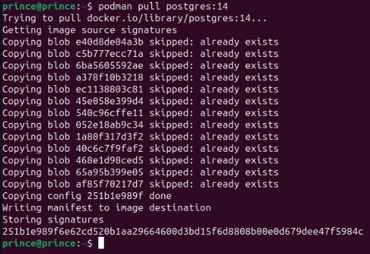
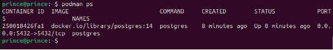
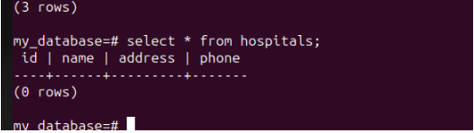
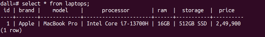
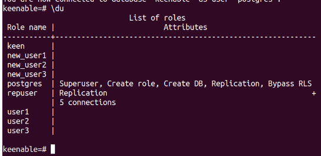
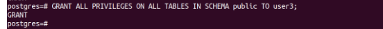
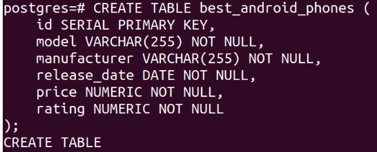
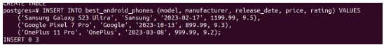

Podman is an open-source container management tool used to create, run, and manage containers on Linux systems.
PostgreSQL ek open-source relational database management system (RDBMS) hai jo data storage aur management ke liye istemal hota hai.
sudo apt install -y podman
podman version

sudo mkdir -p /home/prince/postgres-data

podman run --name postgres -d -p 5432:5432 -e POSTGRES_PASSWORD=mysecretpassword -v postgres-data:/var/lib/postgresql/data postgres:14

podman ps

podman exec -it postgres psql -U postgres
CREATE USER noida WITH PASSWORD 'noida1'; CREATE USER delhi WITH PASSWORD 'delhi1'; CREATE USER gurugram WITH PASSWORD 'gurugram1'; CREATE ROLE CREATE ROLE CREATE ROLE

postgres=# CREATE DATABASE my_database;

postgres=# \l (List of databases)
postgres=# \c (connected to database)
CREATE TABLE my_table ( id SERIAL NOT NULL PRIMARY KEY, name VARCHAR(255) NOT NULL );
CREATE TABLE: This keyword tells the database to create a new table.
my_table: This is the name of the table that is being created.
( id SERIAL NOT NULL PRIMARY KEY, name VARCHAR(255) NOT NULL ): This is the definition of the table, which includes the names and data types of the columns in the table.
id SERIAL NOT NULL PRIMARY KEY: This column will store the unique identifier for each row in the table. The SERIAL data type means that the database will automatically generate a unique integer value for each new row that is inserted into the table. The NOT NULL constraint means that this column cannot be empty. The PRIMARY KEY constraint means that this column uniquely identifies each row in the table.
name VARCHAR(255) NOT NULL: This column will store the name of each row in the table. The VARCHAR(255) data type means that this column can store up to 255 characters of text. The NOT NULL constraint means that this column cannot be empty.

CREATE EXTENSION pg_trgm;
CREATE EXTENSION

EXTENSION Ye SQL statement PostgreSQL database mein ek extension ko create karne ya activate karne ke liye istemal hota hai. Extension ek prakar ke additional modules ya functions hote hain jo PostgreSQL database functionality ko extend karte hain.
pg_trgm Ye extension PostgreSQL mein full-text search aur trigram similarity capabilities provide karta hai. Full-text search ka use karke, aap apne data mein text ko search kar sakte hain. Trigram similarity ka use karke, aap apne data mein text ke similarity ko calculate kar sakte hain. In capabilities ka use karne ke kai liye hai. For example, aap ine capabilities ka use karke ek website mein contents ko search kar sakte hain, ek database mein data ko search kar sakte hain, ya ek document collection mein documents ko search kar sakte hain.
CRUD (Create, Read, Update, Delete)

my_database=# select * from hospitals;


UPDATE laptops SET price = '2,49,900' WHERE id = 1;

dall=# DELETE FROM laptops WHERE id = 1;

CREATE ROLE user 1 WITH LOGIN PASSWORD 'password1'; CREATE ROLE user 2 WITH LOGIN PASSWORD 'password2'; CREATE ROLE user 3WITH LOGIN PASSWORD 'password3';

\du (User show)

GRANT ALL PRIVILEGES ON ALL TABLES IN SCHEMA public TO user3;

Different types of joins:
CREATE TABLE best_android_phones

INSERT INTO best_android_phones

\dt

select * from best_android_phones;

CREATE TABLE ratings

INSERT INTO ratings

INNER JOIN

(a) Table structure
(\d table name)

(b) finding database size

(c) table size